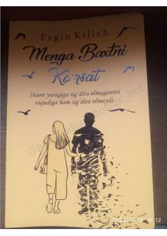

MBHayotdagi qiyinchiliklarni yengib o'tib, o'z baxtingizni topishga chorlovchi motivatsion asar.
Ushbu kitob insonning ichki dunyosi, his-tuyg'ulari va hayotdagi qiyinchiliklarni yengib o'tish yo'llari haqida hikoya qiladi. Muallif o'quvchini o'z baxtini topishga, hayotning har bir lahzasidan zavqlanishga va qiyinchiliklarga qaramay sevgi bilan yashashga chorlaydi.